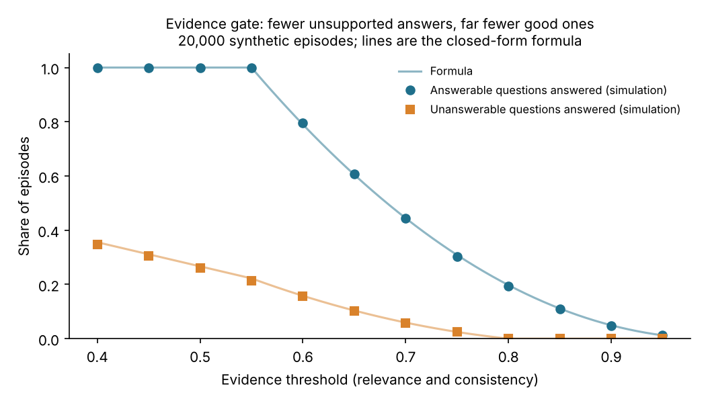

Benchmark · Agentic AI · Synthetic study
An evidence gate cut unsupported agent answers to 6%, but also dropped over half the good ones
A tool-using agent should sometimes say "I don't know". I built a small synthetic benchmark to see what a simple evidence rule costs, then checked its numbers against a formula and found what the simulator can and cannot tell us.
By Muzammal Hussain · 4 November 2026 · 4 min read
ReAct agents (Yao et al., 2023) think, call a tool, read the result and answer. They have no way to abstain, and the authors trace 23% of ReAct errors to uninformative search results. In a clinic setting, an agent that answers anyway when its lookup returned nothing useful is a safety problem. Selective classification has studied the same trade-off for decades: answer less often to be wrong less often. I wanted a first, controlled look at that trade-off for agents.
Key findings
- Answering whenever a tool returns something is not enough. That rule still answered 67% of the questions that had no proper evidence.
- A 0.70 evidence gate cut unsupported answers to 6%, but answered only 44% of the questions that could be answered.
- No threshold kept both: at 0.85 unsupported answers fell to 0%, and only 11% of good questions were answered.
- Every number matched a hand-worked formula within 0.013, so the simulator shows the shape of the trade-off, not how real agents behave.
What I did
Each of 20,000 synthetic episodes (5 seeds × 4,000) stands for one tool call. The evidence is either sufficient (the only answerable case), missing, irrelevant or contradictory, and comes as two scores between 0 and 1: relevance and consistency. Five rules decide whether to answer, seeing only the scores and never the hidden condition.
- Always answer and answer if any evidence is returned.
- Evidence gates at 0.50, 0.70 and 0.85: answer only if relevance and consistency both reach the threshold.
No language model is called. The code, the 20,000 episodes and a Kaggle notebook are public.
Results

| Rule | Answerable answered | Unanswerable answered | Answer accuracy | Wrong or unsupported share of answers |
|---|---|---|---|---|
| Always answer | 100% | 100% | 87.5% | 78.1% |
| Any evidence returned | 100% | 66.7% | 87.5% | 70.8% |
| Gate 0.50 | 100% | 26.0% | 87.5% | 50.8% |
| Gate 0.70 | 44.4% | 5.8% | 91.8% | 33.9% |
| Gate 0.85 | 11.0% | 0.0% | 97.3% | 2.7% |
Checking the numbers by hand
Because the simulator draws scores from fixed ranges, each result can also be worked out on paper. Sufficient evidence has both scores between 0.55 and 1.00, so the 0.70 gate answers it with probability (0.30 / 0.45)² = 0.444, exactly the 44.4% in the table. Across all five rules and twelve thresholds, 85 values in total, the largest gap between the formula and the simulation was 0.013.
This is a useful check that the code is right. It also means the trade-off curve is set by the ranges I chose before the run. The simulator cannot say where a real agent sits on that curve, or whether a real model can even judge relevance and consistency from text.
What this means
The direction holds: "the tool returned something" is a weak reason to answer, and any rule strict enough to block unsupported answers will also block good ones. Where that cost lands depends on how well an agent can tell good evidence from bad, and that is exactly what a synthetic score hides. For clinical tools such as MeetPhysio, that judgement has to be measured on real text.
Limitations
This is a synthetic study. There is no language model, no real tool output and no text: relevance and consistency are given as numbers, while a real agent must judge them. The score ranges and the chance of a correct answer are my assumptions, and other choices would give other numbers. Variation between seeds is only sampling noise.
What I will test next
- A ReAct agent with qwen2.5:3b and llama3.1:8b on clinic questions where the lookup returns sufficient, missing, irrelevant or contradictory text.
- The same questions in English and Roman Urdu, measuring how often each model answers when it should abstain.
- Whether an evidence check written in code beats asking the model to judge its own evidence.
Follows: Yao S., Zhao J., Yu D., Du N., Shafran I., Narasimhan K., Cao Y. (2023). ReAct: Synergizing Reasoning and Acting in Language Models. ICLR 2023. arXiv:2210.03629. Geifman Y., El-Yaniv R. (2017). Selective classification for deep neural networks. NeurIPS 2017.